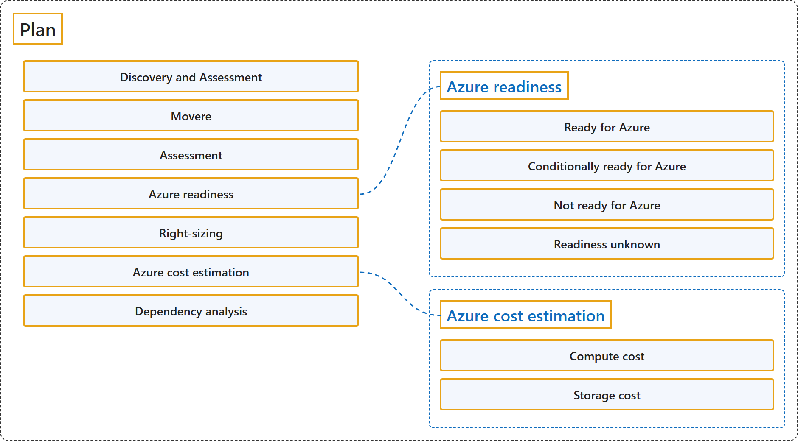

24.3 Plan
Classification

Glossary
| Term | Definition | 中文解释 | Source |
|---|---|---|---|
| Plan 计划 |
"After you make the decision to migrate to Azure, the next important phase of migration is planning. To plan migration in detail, use Azure Migrate assessments to find:" | 决定迁移到 Azure 之后，迁移的下一个重要阶段是规划。要详细规划迁移，请使用 Azure Migrate 评估来确定： | Microsoft, n.d., "Plan" section, para. 1 |
| Discovery and Assessment 发现和评估 |
"Discover and assess on-premises servers running on VMware, Hyper-V, and physical servers in preparation for migration to Azure." | 发现并评估本地服务器，这些服务器运行在 VMware、Hyper-V 和物理服务器上，为迁移到 Azure 做准备。 | Microsoft, n.d., "Integrated tools and features" section, "Discovery and Assessment" row, Details |
| Movere Movere |
"Discover and assess on-premises workloads. This tool is retired. Use Azure Migrate for your migration journey." | 发现并评估本地工作负载。 此工具已停用。请使用 Azure Migrate 完成迁移之旅。 | Microsoft, n.d., "Integrated tools and features" section, "Movere" row, Function and Details |
| Assessment 评估 |
"An assessment with the Discovery and assessment tool measures the readiness and estimates the effect of migrating on-premises servers to Azure." | 使用发现和评估工具进行的评估会衡量就绪性，并估算把本地服务器迁移到 Azure 的影响。 | Microsoft, 2026, "What's an assessment?" section, para. 1 |
| Azure readiness Azure 就绪性 |
"Azure readiness: Assess whether on-premises servers, SQL servers, and web apps are ready for migration to Azure." | Azure 就绪性：评估本地服务器、SQL 服务器和 Web 应用是否已准备好迁移到 Azure。 | Microsoft, n.d., "Plan" section, list item 1 |
| Ready for Azure Azure 就绪 |
"Ready for Azure: The server can be migrated as-is to Azure without any changes. It will start in Azure with full Azure support." | Azure 就绪：服务器可以不做任何更改、按原样迁移到 Azure。它会在 Azure 中启动，并获得完整的 Azure 支持。 | Microsoft, 2026, "Calculate readiness" section, list item 1 |
| Conditionally ready for Azure 有条件就绪 |
"Conditionally ready for Azure: The server might start in Azure but might not have full Azure support. For example, Azure doesn't support a server that's running an old version of Windows Server." | 有条件就绪：服务器可能可以在 Azure 中启动，但可能没有完整的 Azure 支持。例如，Azure 不支持运行旧版 Windows Server 的服务器。 | Microsoft, 2026, "Calculate readiness" section, list item 2 |
| Not ready for Azure 未就绪 |
"Not ready for Azure: The server won't start in Azure. For example, if an on-premises server's disk stores more than 64 TB, Azure can't host the server." | 未就绪：服务器无法在 Azure 中启动。例如，如果本地服务器的磁盘存储了超过 64 TB 的数据，Azure 就无法托管该服务器。 | Microsoft, 2026, "Calculate readiness" section, list item 3 |
| Readiness unknown 就绪性未知 |
"Readiness unknown: Azure Migrate can't determine the readiness of the server because of insufficient metadata." | 就绪性未知：Azure Migrate 无法确定服务器的就绪性，原因是元数据不足。 | Microsoft, 2026, "Calculate readiness" section, list item 4 |
| Right-sizing 规模调整 |
"Right-sizing: Estimate the size of Azure virtual machines (VMs), the Azure SQL configuration, and the number of Azure VMware Solution nodes after migration." | 规模调整：估算迁移后 Azure 虚拟机（VM）的大小、Azure SQL 配置以及 Azure VMware 解决方案节点的数量。 | Microsoft, n.d., "Plan" section, list item 2 |
| Azure cost estimation Azure 成本估算 |
"Azure cost estimation: Estimate costs for running on-premises servers in Azure." | Azure 成本估算：估算在 Azure 中运行本地服务器的成本。 | Microsoft, n.d., "Plan" section, list item 3 |
| Compute cost 计算成本 |
"Azure Migrate uses the recommended Azure VM size and the Azure Billing API to calculate the monthly cost for the server." | Azure Migrate 使用推荐的 Azure VM 大小和 Azure 计费 API 来计算该服务器的每月成本。 | Microsoft, 2026, "Compute cost" section, para. 1 |
| Storage cost 存储成本 |
"The monthly storage cost for a server is calculated by aggregating the monthly cost of all disks that are attached to the server." | 服务器的每月存储成本是通过汇总连接到该服务器的所有磁盘的每月成本计算得出的。 | Microsoft, 2026, "Storage cost" section, para. 1 |
| Dependency analysis 依赖关系分析 |
"Dependency analysis: Understand the network dependencies between servers in your datacenter so that you can make high-confidence migration plans without missing any critical dependency." | 依赖关系分析：了解数据中心内服务器之间的网络依赖关系，以便制定高可信度的迁移计划，不遗漏任何关键依赖。 | Microsoft, n.d., "Plan" section, list item 4 |
References
- Microsoft. (n.d.). About Azure Migrate. Microsoft Learn. Retrieved October 18, 2026, from https://learn.microsoft.com/en-us/azure/migrate/migrate-services-overview
- Microsoft. (2026, February 26). Assessment overview (migrate to Azure VMs). Microsoft Learn. https://learn.microsoft.com/en-us/azure/migrate/concepts-assessment-calculation?view=migrate-classic